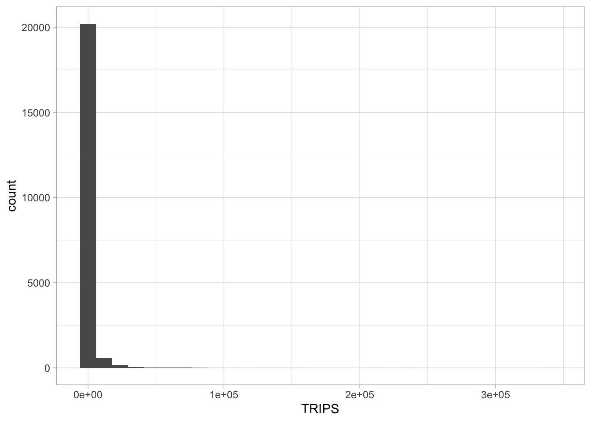
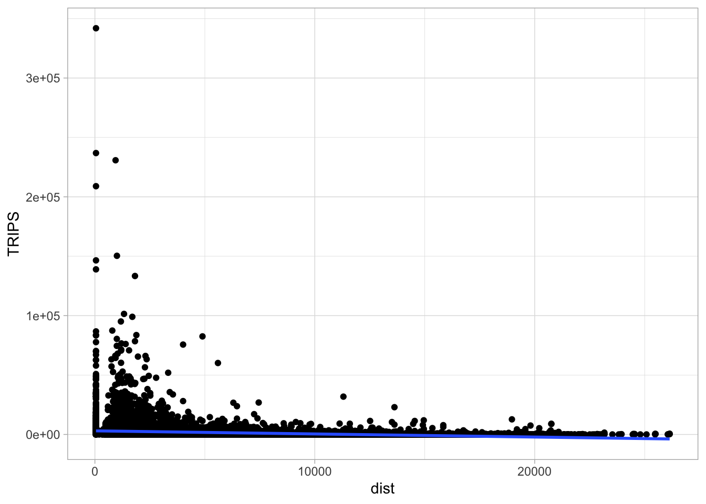
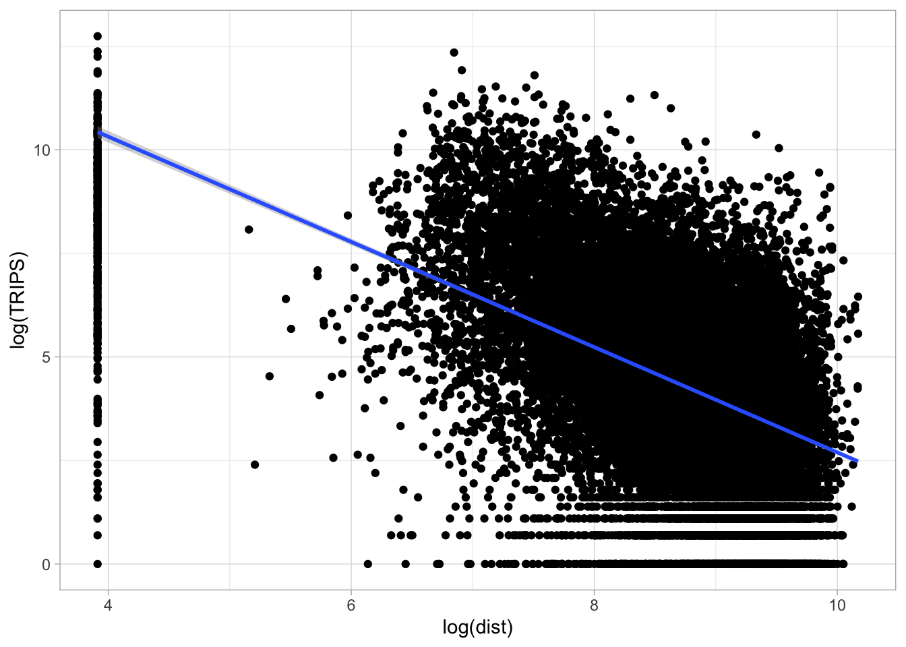

Code
pacman::p_load(tmap, sf, DT, sp, reshape2,
ggpubr, units, tidyverse)pacman::p_load(tmap, sf, DT, sp, reshape2,
ggpubr, units, tidyverse)This exercise is a continuation of Chapter 15: Processing and Visualising Flow Data and the following data will be used:
od_data.rds, weekday morning peak passenger flows at planning subzone level.
mpsz.rds, URA Master Plan 2019 Planning Subzone boundary in simple feature tibble data frame format.
Beside these two data sets, an additional attribute data file called pop.csv will be provided.
Import the population data.
pop <- read_csv("./data/aspatial/pop.csv")Check the population data per age range.
glimpse(pop)Rows: 332
Columns: 5
$ PA <chr> "ANG MO KIO", "ANG MO KIO", "ANG MO KIO", "ANG MO KIO", "ANG …
$ SZ <chr> "ANG MO KIO TOWN CENTRE", "CHENG SAN", "CHONG BOON", "KEBUN B…
$ AGE7_12 <dbl> 310, 1140, 1010, 1050, 420, 810, 390, 980, 0, 260, 0, 1190, 6…
$ AGE13_24 <dbl> 710, 2770, 2650, 2390, 1120, 1920, 1150, 2000, 0, 650, 0, 326…
$ AGE25_64 <dbl> 2780, 15700, 14240, 12460, 3620, 9650, 4350, 11320, 0, 2500, …Use sf package to read master plan subzone data and bus stop location data.
mpsz <- st_read(dsn = "./data/geospatial",
layer = "MPSZ-2019") %>% st_transform(crs = 3414)Reading layer `MPSZ-2019' from data source
`/Users/SMU/liangyao2023/ISSS624/Inclass_Ex/Inclass_Ex03/data/geospatial'
using driver `ESRI Shapefile'
Simple feature collection with 332 features and 6 fields
Geometry type: MULTIPOLYGON
Dimension: XY
Bounding box: xmin: 103.6057 ymin: 1.158699 xmax: 104.0885 ymax: 1.470775
Geodetic CRS: WGS 84There are at least two ways to compute the required distance matrix. One is based on sf and the other is based on sp. Past experience shown that computing distance matrix by using sf function took relatively longer time that sp method especially the data set is large. In view of this, sp method is used in the code chunks below.
First as.Spatial() will be used to convert mpsz from sf tibble data frame to SpatialPolygonsDataFrame of sp object as shown in the code chunk below.
mpsz_sp <- as(mpsz, "Spatial")
mpsz_spclass : SpatialPolygonsDataFrame
features : 332
extent : 2667.538, 56396.44, 15748.72, 50256.33 (xmin, xmax, ymin, ymax)
crs : +proj=tmerc +lat_0=1.36666666666667 +lon_0=103.833333333333 +k=1 +x_0=28001.642 +y_0=38744.572 +ellps=WGS84 +towgs84=0,0,0,0,0,0,0 +units=m +no_defs
variables : 6
names : SUBZONE_N, SUBZONE_C, PLN_AREA_N, PLN_AREA_C, REGION_N, REGION_C
min values : ADMIRALTY, AMSZ01, ANG MO KIO, AM, CENTRAL REGION, CR
max values : YUNNAN, YSSZ09, YISHUN, YS, WEST REGION, WR Next, spDists() of sp package will be used to compute the Euclidean distance between the centroids of the planning subzones.
dist <- spDists(mpsz_sp,
longlat = FALSE)
head(dist, n=c(10, 10)) [,1] [,2] [,3] [,4] [,5] [,6] [,7]
[1,] 0.000 3926.0025 3939.108 20252.964 2989.9839 1431.330 19211.836
[2,] 3926.003 0.0000 305.737 16513.865 951.8314 5254.066 16242.523
[3,] 3939.108 305.7370 0.000 16412.062 1045.9088 5299.849 16026.146
[4,] 20252.964 16513.8648 16412.062 0.000 17450.3044 21665.795 7229.017
[5,] 2989.984 951.8314 1045.909 17450.304 0.0000 4303.232 17020.916
[6,] 1431.330 5254.0664 5299.849 21665.795 4303.2323 0.000 20617.082
[7,] 19211.836 16242.5230 16026.146 7229.017 17020.9161 20617.082 0.000
[8,] 14960.942 12749.4101 12477.871 11284.279 13336.0421 16281.453 5606.082
[9,] 7515.256 7934.8082 7649.776 18427.503 7801.6163 8403.896 14810.930
[10,] 6391.342 4975.0021 4669.295 15469.566 5226.8731 7707.091 13111.391
[,8] [,9] [,10]
[1,] 14960.942 7515.256 6391.342
[2,] 12749.410 7934.808 4975.002
[3,] 12477.871 7649.776 4669.295
[4,] 11284.279 18427.503 15469.566
[5,] 13336.042 7801.616 5226.873
[6,] 16281.453 8403.896 7707.091
[7,] 5606.082 14810.930 13111.391
[8,] 0.000 9472.024 8575.490
[9,] 9472.024 0.000 3780.800
[10,] 8575.490 3780.800 0.000First, we will create a list sorted according to the the distance matrix by planning sub-zone code.
sz_names <- mpsz$SUBZONE_CNext we will attach SUBZONE_C to row and column for distance matrix matching ahead
colnames(dist) <- paste0(sz_names)
rownames(dist) <- paste0(sz_names)Next, we will pivot the distance matrix into a long table by using the row and column subzone codes as show in the code chunk below.
distPair <- melt(dist) %>%
rename(dist = value)
head(distPair, 10) Var1 Var2 dist
1 MESZ01 MESZ01 0.000
2 RVSZ05 MESZ01 3926.003
3 SRSZ01 MESZ01 3939.108
4 WISZ01 MESZ01 20252.964
5 MUSZ02 MESZ01 2989.984
6 MPSZ05 MESZ01 1431.330
7 WISZ03 MESZ01 19211.836
8 WISZ02 MESZ01 14960.942
9 SISZ02 MESZ01 7515.256
10 SISZ01 MESZ01 6391.342Notice that the within zone distance is 0.
In this section, we are going to append a constant value to replace the intra-zonal distance of 0.
First, we will select and find out the minimum value of the distance by using summary().
distPair %>%
filter(dist > 0) %>%
summary() Var1 Var2 dist
MESZ01 : 331 MESZ01 : 331 Min. : 173.8
RVSZ05 : 331 RVSZ05 : 331 1st Qu.: 7149.5
SRSZ01 : 331 SRSZ01 : 331 Median :11890.0
WISZ01 : 331 WISZ01 : 331 Mean :12229.4
MUSZ02 : 331 MUSZ02 : 331 3rd Qu.:16401.7
MPSZ05 : 331 MPSZ05 : 331 Max. :49894.4
(Other):107906 (Other):107906 Next, a constant distance value of 50m is added into intra-zones distance.
distPair$dist <- ifelse(distPair$dist == 0,
50, distPair$dist)The code chunk below will be used to check the result data.frame.
summary(distPair) Var1 Var2 dist
MESZ01 : 332 MESZ01 : 332 Min. : 50
RVSZ05 : 332 RVSZ05 : 332 1st Qu.: 7097
SRSZ01 : 332 SRSZ01 : 332 Median :11864
WISZ01 : 332 WISZ01 : 332 Mean :12193
MUSZ02 : 332 MUSZ02 : 332 3rd Qu.:16388
MPSZ05 : 332 MPSZ05 : 332 Max. :49894
(Other):108232 (Other):108232 The code chunk below is used to rename the origin and destination fields.
distPair <- distPair %>%
rename(orig = Var1,
dest = Var2)The code chunk below is used to rename the origin and destination fields.
write_rds(distPair, "./data/rds/distPair.rds") Iimport od_data save in hands on exercise 3 into R environment.
od_data <- read_rds("./data/rds/od_data.rds")Next, we will compute the total passenger trip between and within planning subzones by using the code chunk below. The output is all flow_data.
flow_data <- od_data %>%
group_by(ORIGIN_SZ, DESTIN_SZ) %>%
summarize(TRIPS = sum(MORNING_PEAK))
head(flow_data, 10)# A tibble: 10 × 3
# Groups: ORIGIN_SZ [1]
ORIGIN_SZ DESTIN_SZ TRIPS
<chr> <chr> <dbl>
1 AMSZ01 AMSZ01 2694
2 AMSZ01 AMSZ02 10591
3 AMSZ01 AMSZ03 14980
4 AMSZ01 AMSZ04 3106
5 AMSZ01 AMSZ05 7734
6 AMSZ01 AMSZ06 2306
7 AMSZ01 AMSZ07 1824
8 AMSZ01 AMSZ08 2734
9 AMSZ01 AMSZ09 2300
10 AMSZ01 AMSZ10 164Code chunk below is used to add three new fields in flow_data dataframe.
flow_data$FlowNoIntra <- ifelse(
flow_data$ORIGIN_SZ == flow_data$DESTIN_SZ,
0, flow_data$TRIPS)
flow_data$offset <- ifelse(
flow_data$ORIGIN_SZ == flow_data$DESTIN_SZ,
0.000001, 1)Before we can join flow_data and distPair, we need to convert data value type of ORIGIN_SZ and DESTIN_SZ fields of flow_data dataframe into factor data type.
flow_data$ORIGIN_SZ <- as.factor(flow_data$ORIGIN_SZ)
flow_data$DESTIN_SZ <- as.factor(flow_data$DESTIN_SZ)Now, left_join() of dplyr will be used to flow_data dataframe and distPair dataframe. The output is called flow_data1.
flow_data1 <- flow_data %>%
left_join (distPair,
by = c("ORIGIN_SZ" = "orig",
"DESTIN_SZ" = "dest"))pop <- pop %>%
left_join(mpsz,
by = c("PA" = "PLN_AREA_N",
"SZ" = "SUBZONE_N")) %>%
select(1:6) %>%
rename(SZ_NAME = SZ,
SZ = SUBZONE_C)flow_data1 <- flow_data1 %>%
left_join(pop,
by = c(ORIGIN_SZ = "SZ")) %>%
rename(ORIGIN_AGE7_12 = AGE7_12,
ORIGIN_AGE13_24 = AGE13_24,
ORIGIN_AGE25_64 = AGE25_64) %>%
select(-c(PA, SZ_NAME))flow_data1 <- flow_data1 %>%
left_join(pop,
by = c(DESTIN_SZ = "SZ")) %>%
rename(DESTIN_AGE7_12 = AGE7_12,
DESTIN_AGE13_24 = AGE13_24,
DESTIN_AGE25_64 = AGE25_64) %>%
select(-c(PA, SZ_NAME))We will called the output data file SIM_data. it is in rds data file format.
write_rds(flow_data1, "./data/rds/SIM_data.rds")In this section, you will learn how to calibrate Spatial Interaction Models by using Poisson Regression method.
SIM_data <- read_rds("./data/rds/SIM_data.rds")Firstly, let us plot the distribution of the dependent variable (i.e. TRIPS) by using histogram method by using the code chunk below.
ggplot(data = SIM_data,
aes(x = TRIPS)) +
geom_histogram() +
theme_light()
Notice that the distribution is highly skewed and not resemble bell shape or also known as normal distribution.
Next, let us visualise the relation between the dependent variable and one of the key independent variable in Spatial Interaction Model, namely distance.
ggplot(data = SIM_data,
aes(x = dist,
y = TRIPS)) +
geom_point() +
geom_smooth(method = lm) +
theme_light()
Notice that their relationship hardly resemble linear relationship.
On the other hand, if we plot the scatter plot by using the log transformed version of both variables, we can see that their relationship is more resemble linear relationship.
ggplot(data = SIM_data,
aes(x = log(dist),
y = log(TRIPS))) +
geom_point() +
geom_smooth(method = lm) +
theme_light()